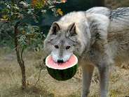

|  | Ruddy JimenezFounder and CTO of Ball-Rape Productions Listen here punk. You think theres something here that will help you begin the CHOCOLATE THUNGER?!?!?What the devil. Painting should do one thing. It should put happiness in your heart. And maybe, maybe, maybe... This piece of canvas is your world.Just let these leaves jump off the brush But we're not there yet, so we don't need to worry about it. You can create the world you want to see and be a part of. You have that power. When things happen - enjoy them. They're little gifts. In your world you have total and absolute power. In this world, everything can be happy.Automatically, all of these beautiful, beautiful things will happen. Everything is happy if you choose to make it that way. You can spend all day playing with mountains.Making all those little fluffies that live in the clouds. Even trees need a friend. We all need friends. You can do anything here. So don't worry about it. This is a happy place, little squirrels live here and play. This is the fun part Even the worst thing we can do here is good. |
| Dates | Work |
|---|---|
| 2010-2013 | Ball Division |
| 2010 | Research at Ball-Tech University |
| Observation | ⭐⭐⭐⭐⭐ |
| Strategizing | ⭐⭐⭐ |
| Analyzing | ⭐⭐ |
| Execution | ⭐⭐⭐⭐⭐ |